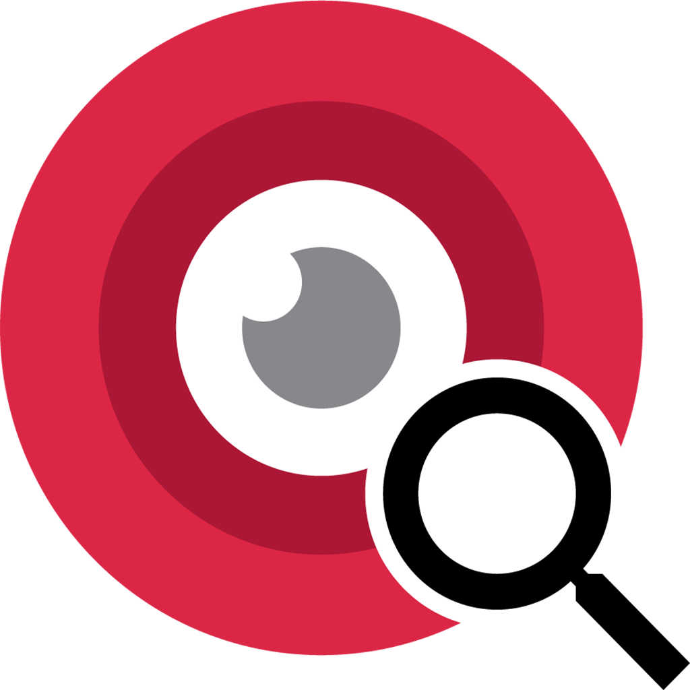

<ion-header translucent="true" mode="ios">
  <ion-toolbar>
    
    <ion-buttons slot="end" (click)="ir('perfil')">
      <ion-chip color="tertiary">
        <ion-avatar class="avatar">
          
        </ion-avatar>
        <ion-label> {{ usuarioService.usuario.nombre }} </ion-label>
      </ion-chip>
      <ion-button (click)="cerrar_sesion()" color="danger"> Salir
        <ion-icon slot="end" name="exit" color="danger"></ion-icon>
      </ion-button>
    </ion-buttons>
  </ion-toolbar>
  <ion-row class="ion-align-items-center ion-justify-content-center">
    <ion-col size="6">
      
  </ion-col>
  </ion-row>
</ion-header>

<ion-content >
<ion-grid style="height: 100%">
  <ion-row class="ion-align-items-center ion-justify-content-center"  style="height: 100%">

    <ion-row >
        
        <ion-col size="6" size-xs="12" size-sm="12" size-md="6" size-lg="6">
            <ion-button
            (click)="ir('listado-zonas')"
            color="primary"
            expand="block"
            color="azulpastel"
            [size]="size"
            class="ion-text-wrap altura-btn"
          >
          <ion-icon name="people"></ion-icon>
            Auditoría Puntos Limpios
          </ion-button>
        </ion-col>

        <ion-col size="6" size-xs="12" size-sm="12" size-md="6" size-lg="6">
          <ion-button
          (click)="ir('notificar')"
          color="primary"
          expand="block"
          [size]="size"
          color="verdepastel"
          class="ion-text-wrap altura-btn"
        >
        <ion-icon name="warning"></ion-icon>
          Notificar Incidente
        </ion-button>
      </ion-col>
      <ion-col size="6" size-xs="12" size-sm="12" size-md="6" size-lg="6">
        <ion-button
        (click)="ir('observaciones')"
        color="primary"
        expand="block"
        [size]="size"
        color="carne"
        class="ion-text-wrap altura-btn"
      >
        
        Observaciones Preventivas
      </ion-button>
    </ion-col>
    </ion-row>
  </ion-row>
</ion-grid>
    


</ion-content>

<ion-footer translucent="true" mode="ios">
  <ion-toolbar>
    <ion-buttons slot="end">
      <ion-img src="../../../assets/imgs/corner-logo.png" class="img-corner" ></ion-img>
    </ion-buttons>
  </ion-toolbar>
</ion-footer>